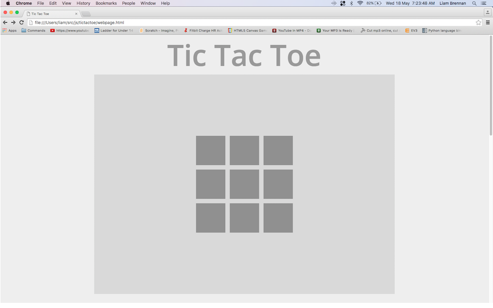
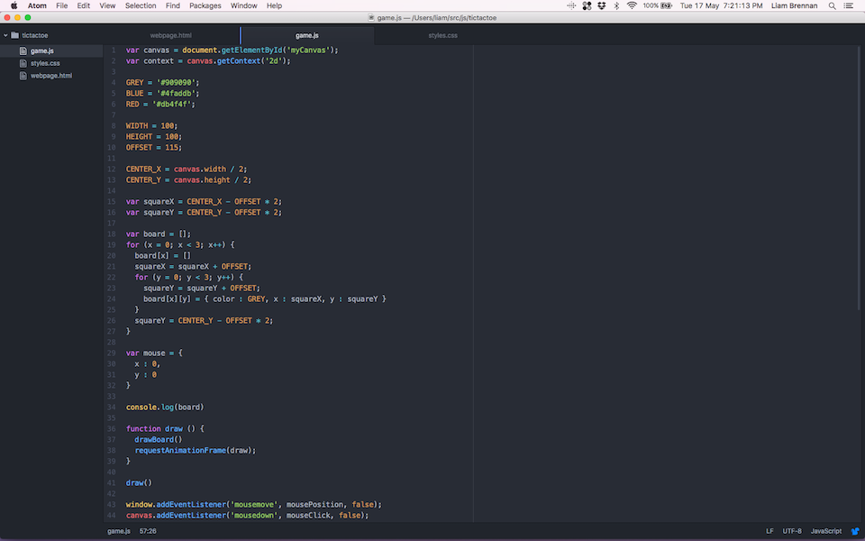
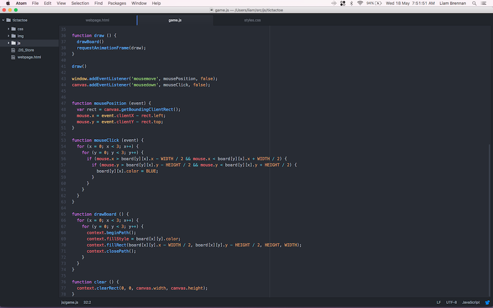
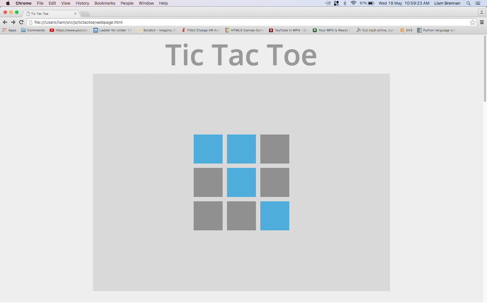
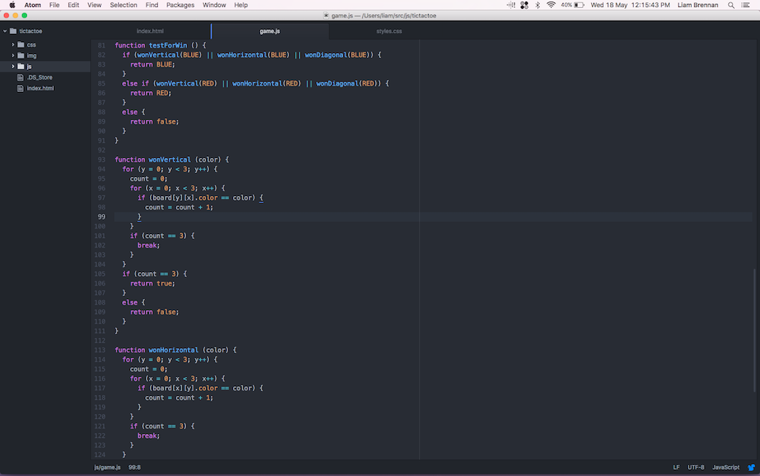
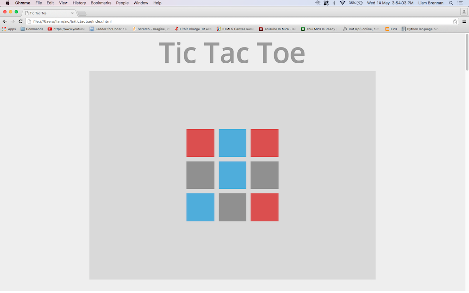

Tic tac toe is a fairly simple game. With a maximum of 9 possible moves at any point in the game constructing an Ai isn’t incredibly hard, but it still has its implications.
I decided to use a html canvas and draw onto it using javascript to simulate the game board. I also built the Ai in js but later I might move to python for machine learning.
First things first, building a game board.
For this I created a 3x3 two dimensional array in js and drew it onto a html canvas. Each square knows if its a O or a X and where it is on the board. To draw it onto the screen I wrote a little function that itterates over the table and draws a square for every location in the array as you can see below. At the moment its nothing special.
Here's a little snippet of the js I was using to draw that up. You can see it setting up some constants, then building the board. Underneath that is the main draw loop and the mouse click event listener.
Next thing was to let the player make their move on the board so I had to figure out a way to detect if a square was clicked. You can see below the mouseClick function is called anytime there is a click on screen and it returns co-ordinates of were the click was. Using this I ran a function that checks if the click was within a square on the board and repeated it nine times. One for each square.
After I implemented the new click code the player can click on a board square and it will change from grey to blue.
As you can see at the moment the clicks are represented by a change in the board square color but later I will make it a O or a X.
The next challenge was to know when a player or Ai had won the game (getting 3 X's or O's in a row). This provde to be quite difficult as I needed to check up, down, left, right and diagonal. As you can see below it ended up being a large section of code.
Because the main game.js file was getting pretty long at this point I decided to split it up into different files to clean up my work space.
For testing the Ai I decided to make it pick a random square and color it red. Using this I could test the win checking and polish up the front end of the board. I had to implement turns into the game and a variable for weather the game was won or not. I wrote some code so the plyer and Ai would take turns and not overwite each others squares when they made a move. I also made it so the game would restart after someone had won.
And it worked! At this point most of the game was done and now it was on to the actual hard bit, the Ai itself
Before I got on to the Ai I went around in the code and neatened some things up and sorted out some of the functions that wern't working. I also decided to add all my code to github to keep it safe if anything went bad.
First I needed to decide what the Ai needed to do.